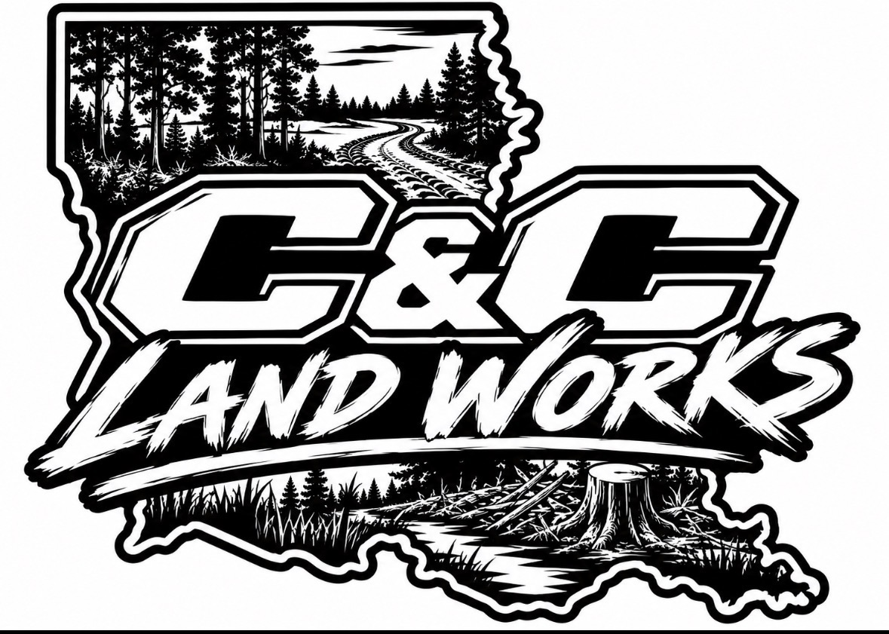
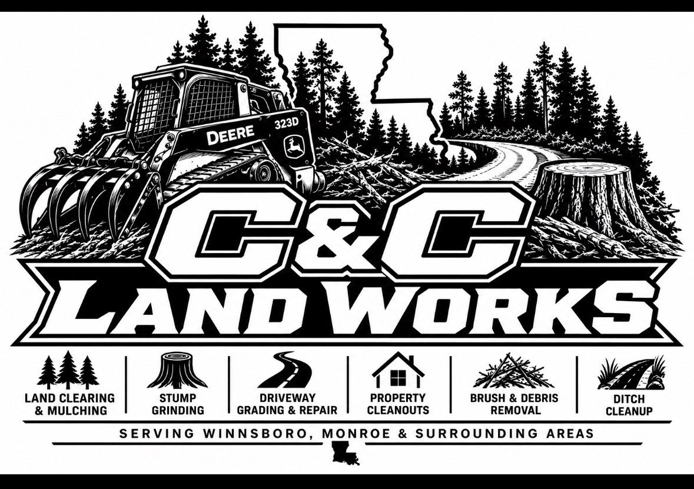

🌲
Land Clearing & Mulching
Clear overgrowth, brush and unwanted vegetation to reclaim usable property.

LOCALLY OWNED • NORTHEAST LOUISIANA
Professional land and property services serving Winnsboro, Franklin Parish, Monroe, West Monroe and surrounding areas.
OUR SERVICES
From overgrown property to a clean, usable space, we bring the equipment and experience to get the job done.
Clear overgrowth, brush and unwanted vegetation to reclaim usable property.
Remove unsightly and difficult stumps and leave the area ready for the next step.
Smooth, level and improve gravel driveways and access roads.
Remove unwanted debris, old structures and property clutter.
Get brush, limbs and debris cleaned up and hauled away.
Fast, dependable cleanup after storms, fallen trees and property damage.
ABOUT C&C LANDWORKS
C&C Landworks is a locally owned land and property services company serving Winnsboro, Franklin Parish, Monroe, West Monroe and surrounding areas.
We're building this company around one simple idea: when you need your property cleared, cleaned up, graded or made usable, you should be able to call people who will show up and do the job right.
Tell Us About Your ProjectOUR WORK
We're adding real C&C Landworks before-and-after photos as soon as our equipment is in and our first projects are completed.

Check back soon for project photos from jobs throughout Northeast Louisiana.
SERVICE AREA
Winnsboro • Franklin Parish • Monroe • West Monroe • Rayville • Columbia • Sterlington • Surrounding Areas
Don't see your town listed? Contact us. We may still be able to help.
GET STARTED
You don't have to book an appointment online. Send us the details of your project and we'll get back to you, or call/text Caden or Chaz directly.